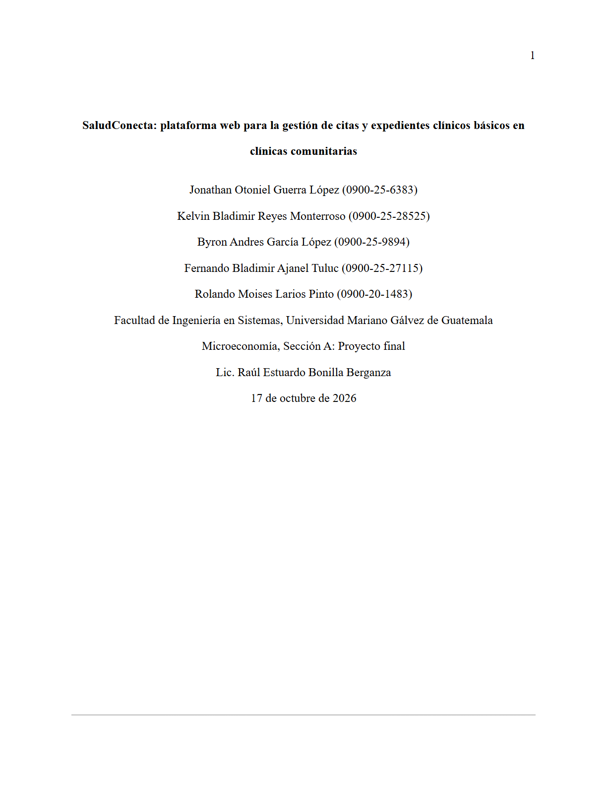

1 · Documento
Documento final (Word)
El documento completo del proyecto: planteamiento del problema, estudios de mercado y técnico, presupuesto y punto de equilibrio, requerimientos, diseño, pruebas y conclusiones.
Más de 100 páginasAPA 7Ver o descargar
Abrir el documento →